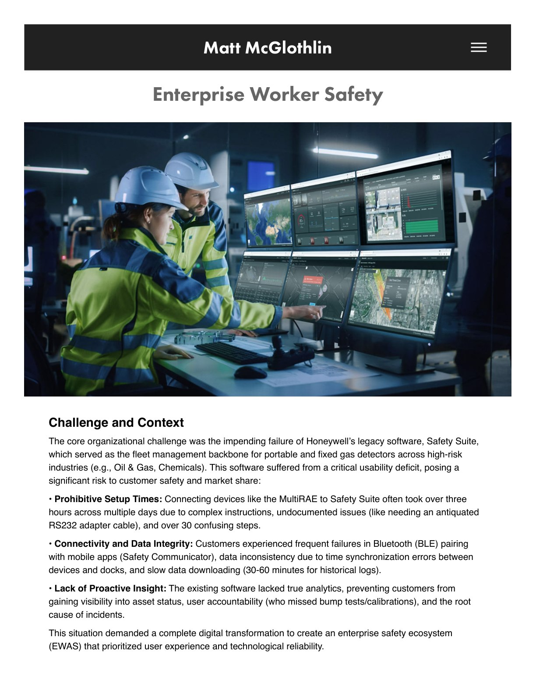
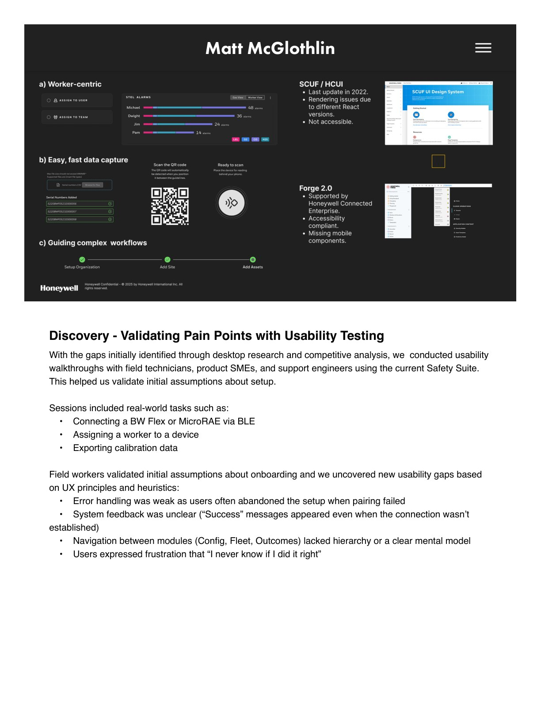
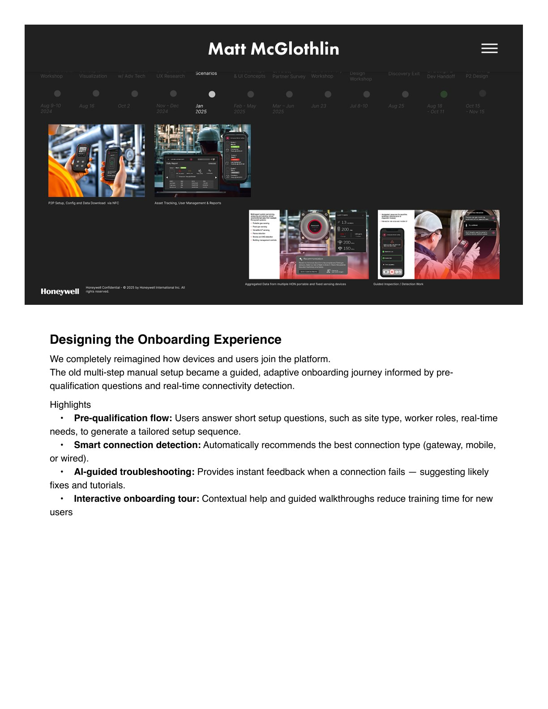
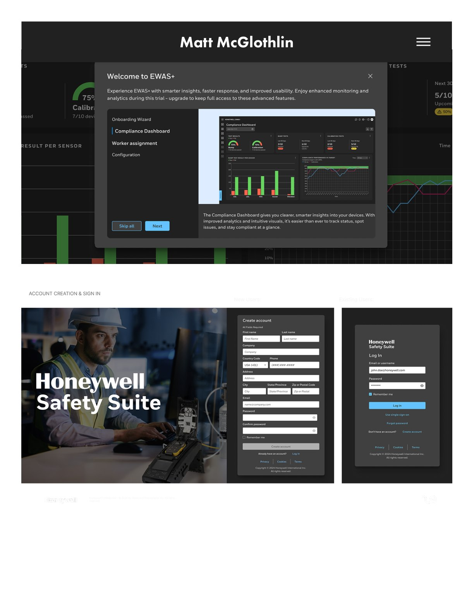
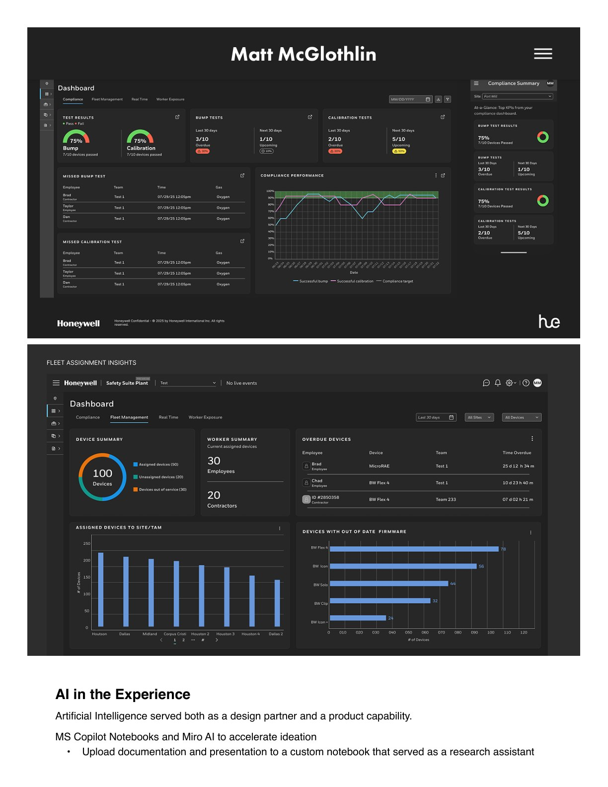
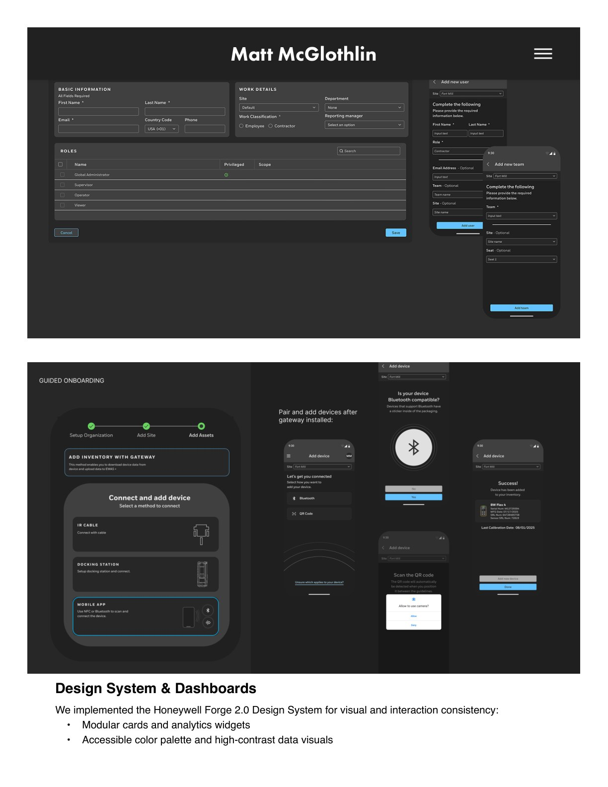

Honeywell · Enterprise UX · Fleet Management · AI
Enterprise Worker Safety
Designing a next-generation enterprise gas detection ecosystem — seamless device setup, modernized fleet management, assured regulatory compliance, and the foundation for AI-enabled safety services.
The Challenge
Honeywell's legacy Safety Suite — the fleet management backbone for portable and fixed gas detectors across high-risk industries like Oil & Gas and Chemicals — suffered a critical usability deficit. Connecting devices could take over three hours across multiple days, with 30+ confusing steps and undocumented quirks like an antiquated RS232 adapter cable.
My Role
As Lead UX Designer I spearheaded the transformation: leading UX strategy and design for onboarding, AI interactions, and dashboard systems, and shaping the integration of Honeywell Forge 2.0 across the new experience — grounded in on-site workshops, voice-of-customer research, competitive benchmarking, and usability testing.
The Outcome
A next-generation ecosystem delivering seamless device setup, best-in-class fleet management with compliance workflows and audit trails for lone-worker and emergency scenarios, and predictive operational intelligence that turns device data into proactive safety insights.





